Aprenda a executar a tosa bebê com um passo a passo que você consegue repetir em todo atendimento.
Um curso prático de cerca de 2 horas, com a groomer Giovanna Rivaroli: do banho ao rostinho redondo, tudo feito na frente da câmera, em um cão de verdade.
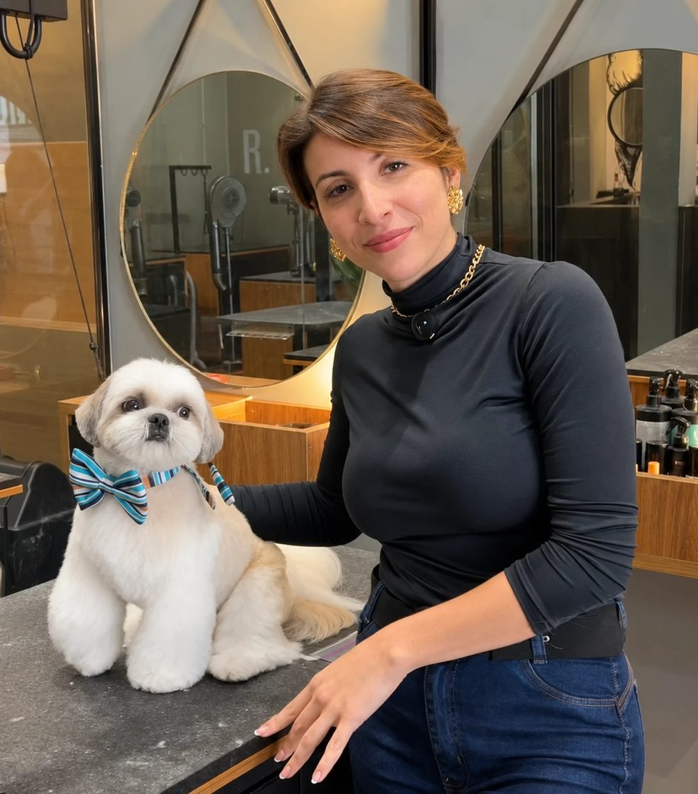
Uma carta para quem tosa
Você reconhece alguma dessas situações?
Se você trabalha com tosa, provavelmente já passou por pelo menos uma delas:
- A sua tosa bebê sai diferente a cada atendimento.
- Rosto e patas ainda são a parte que mais custa a acertar.
- Cada profissional da equipe entrega um acabamento diferente.
- Você já fez curso, viu vídeo e saiu com a sensação de que complicaram o que podia ser simples.
Não basta fazer uma boa tosa uma vez. Você precisa saber repetir o resultado.
É exatamente sobre isso que eu quero falar com você nesta página.
O método
A técnica não precisa ser complicada para ser bem feita.
Quando o processo é explicado em etapas claras, a tosa bebê deixa de ser um desafio e vira rotina. A Tosa Bebê Shih Tzu é o passo a passo que a Giovanna usa no dia a dia da GR Groomers, organizado para você acompanhar, executar e levar para a sua equipe.
Aprender
A lógica de cada etapa, sem termos técnicos desnecessários.
Executar
Do início ao fim, com segurança em cada passo.
Repetir
O mesmo acabamento em todos os cães, em todos os atendimentos.
Ensinar
O método para quem trabalha com você.
Conteúdo
O processo completo, do banho ao acabamento.
Você acompanha a tosa bebê do começo ao fim no Bruninho, um Shih Tzu macho. Cada etapa é mostrada na ordem em que acontece na mesa de tosa:
- Etapa 01Banho e preparaçãoA base para uma pelagem bem preparada antes de começar a tosa.
- Etapa 02Secagem corretaComo secar para o pelo ficar no ponto certo para o corte.
- Etapa 03Técnica da tosa bebêA execução da tosa, da base ao corpo, em sequência.
- Etapa 04Acabamento e finalizaçãoOs detalhes que padronizam o resultado, para você repetir a cada atendimento.
- Etapa 05Rostinho redondoA construção do rosto redondo, passo a passo.
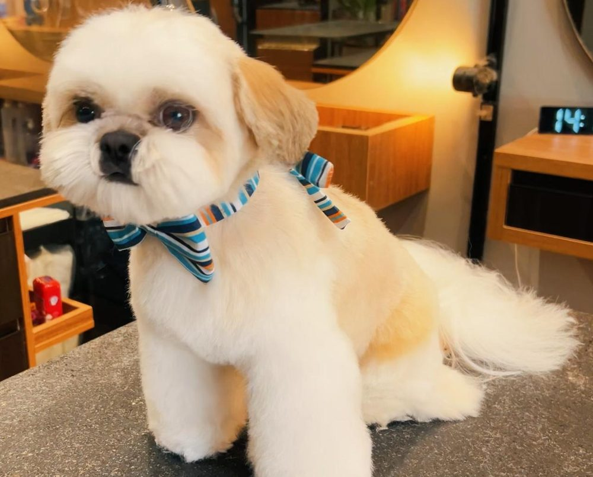
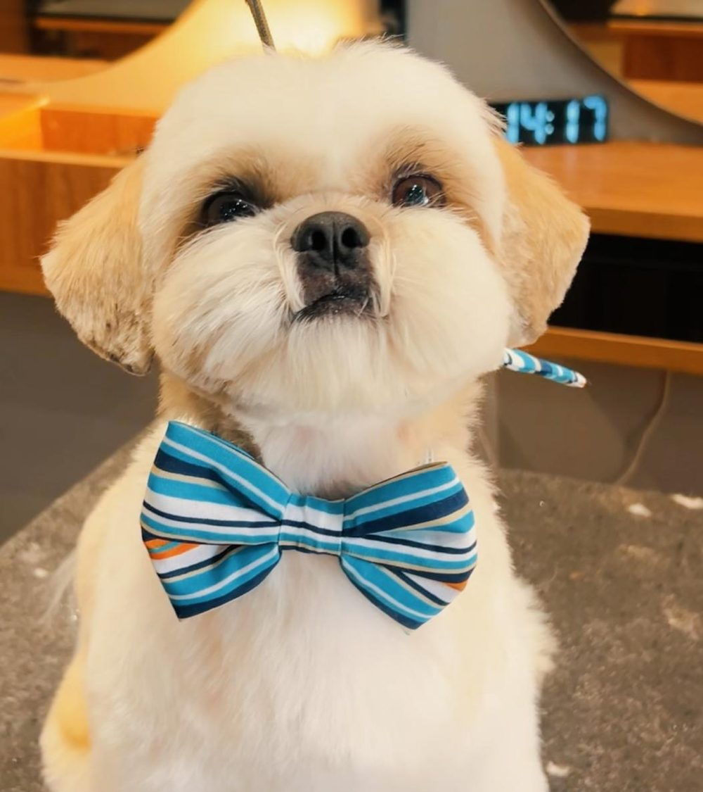
Cerca de 2 horas de conteúdo direto ao ponto, para você assistir, aplicar e voltar nas aulas quando precisar.
Acesso por 1 ano · Garantia de 7 dias
Para quem é
A Tosa Bebê Shih Tzu é para você que é:
A diferença
Existe curso de tosa por R$ 50. A diferença está no que você consegue fazer depois.
Um treinamento barato pode até mostrar uma tosa. O que muda o seu resultado é:
- Quem ensina: uma groomer em atividade, que tosa todos os dias e compete.
- Técnica testada na operação real: não é teoria, é o que funciona numa equipe de cerca de 10 colaboradores.
- Aplicabilidade: você aprende o que consegue colocar em prática no próximo atendimento.
- Método: não só o resultado, mas o caminho para chegar nele de novo.
Você não está pagando por mais vídeo. Está pagando por um processo claro, feito para ser repetido.
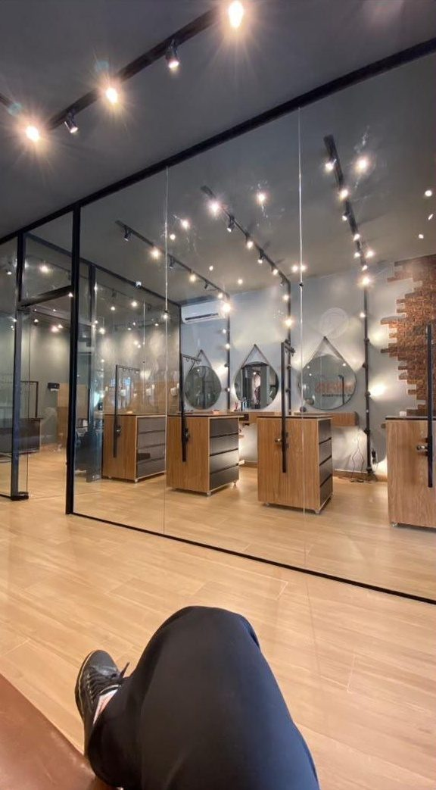
Quem ensina
Por que aprender com a Giovanna?
Giovanna é filha de dois professores. Quando decidiu trabalhar com estética animal, a família não via futuro na profissão. Ela seguiu estudando, fez cursos e especializações e foi buscando formas mais práticas de melhorar a técnica.
Com cerca de 8 anos de mercado, abriu seu próprio espaço, a GR Groomers, em Guarulhos. A equipe cresceu para cerca de 10 colaboradores, e surgiu a pergunta que mudou o seu jeito de trabalhar:
Como fazer profissionais diferentes entregarem o mesmo padrão?
A resposta foi simplificar. Giovanna estruturou um passo a passo que qualquer pessoa da equipe consegue aprender e repetir. É esse processo que ela ensina na Tosa Bebê Shih Tzu.
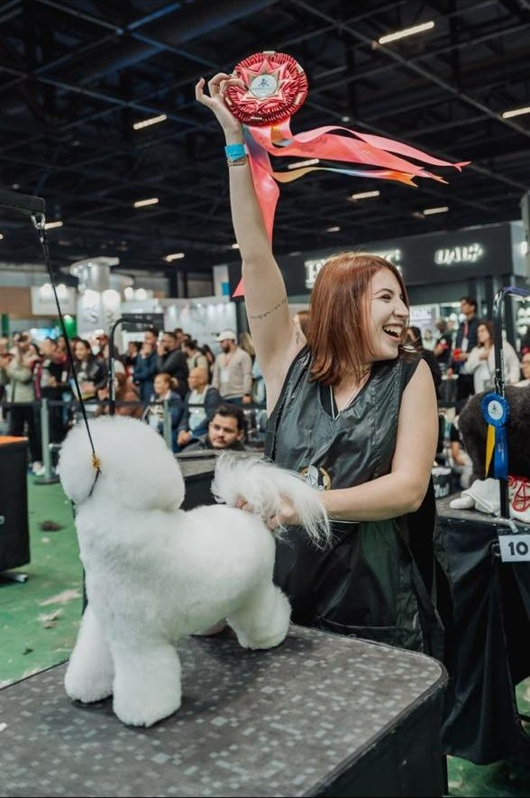
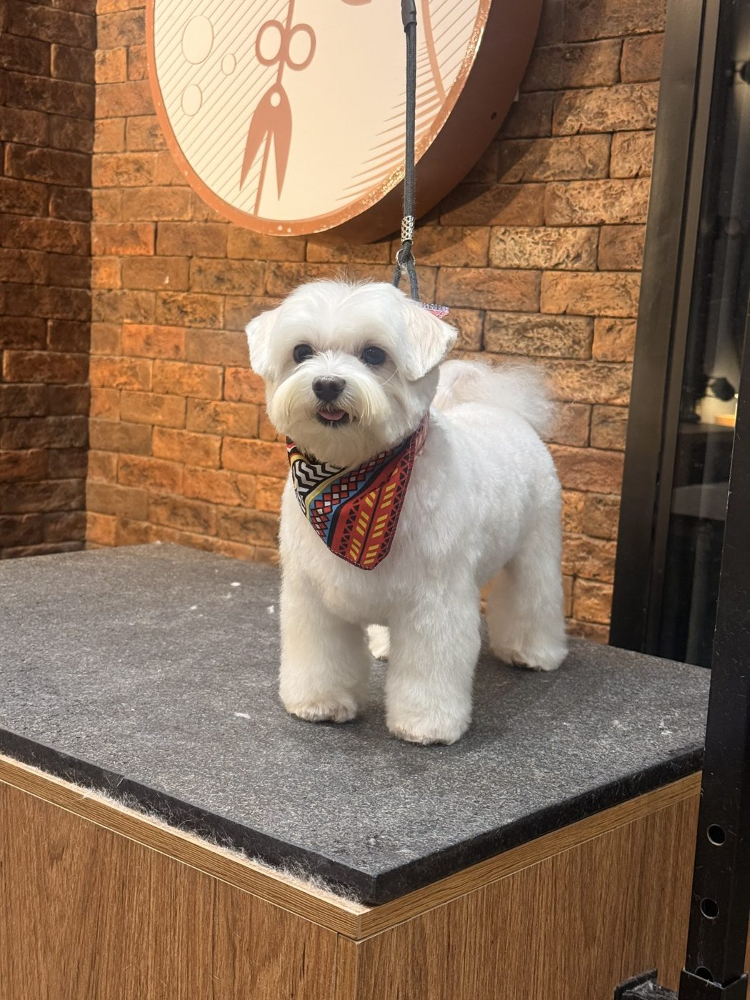
- Cerca de 8 anos de experiência no mercado
- Diversos cursos e especializações
- Groomer competidora, com premiações em competições profissionais
- Proprietária da GR Groomers, com cerca de 10 colaboradores
- Atuação diária em operação real de estética animal
Resultados
Quem aprende na prática, sente a diferença.
Mensagens de alunas dos cursos da Giovanna.
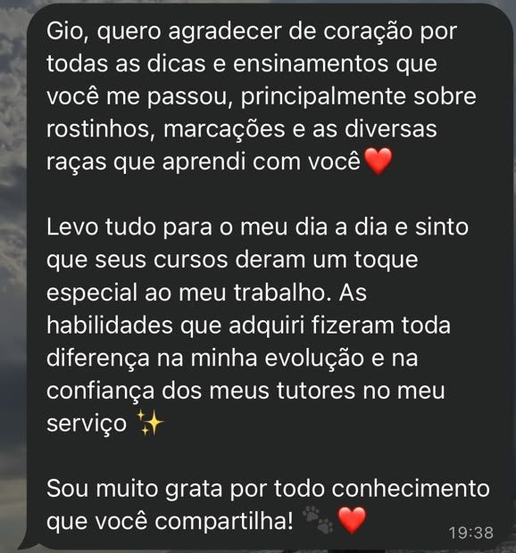
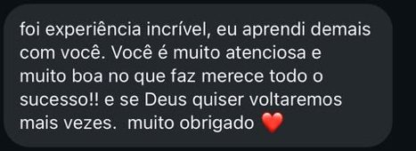
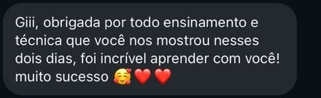
Mesmo método, cães diferentes.
Trabalhos reais da GR Groomers: o padrão se repete.
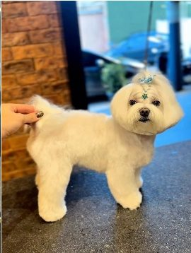
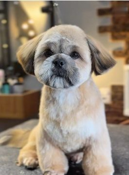
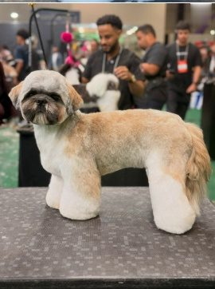
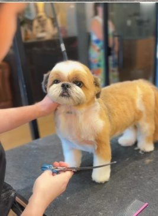
Acesso por 1 ano · Garantia de 7 dias
Tosa Bebê Shih Tzu
E você? Vai continuar na tentativa e erro?
Veja tudo o que está incluído:
- Curso completo, com cerca de 2 horasO processo inteiro, do banho ao rostinho redondo.
- Banho e preparaçãoA base para uma pelagem bem preparada.
- Secagem correta
- Técnica da tosa bebê
- Acabamento e finalização
- Rostinho redondoPasso a passo, feito no Bruninho.
- Certificado
- 1 ano de acessoAssista quando e onde quiser.
à vista, ou em até 12x de R$ 13,13 no cartão
Quero aprender a técnicaGarantia incondicional de 7 dias. Reembolso total, sem burocracia.
Ficou alguma dúvida? Nos chame no WhatsAppAinda não tem certeza? Não se preocupe!
Garantia incondicional de 7 dias.
Você terá 7 dias completos para acessar o treinamento, assistir às aulas e testar o método na prática.
Se, por qualquer motivo, o curso não atender às suas expectativas, basta pedir o reembolso e devolvemos o valor integral, sem burocracia.
Dúvidas
Perguntas frequentes.
Esse curso serve para quem está começando?
Sim. O passo a passo é feito para ser claro, sem termos técnicos desnecessários.
Já trabalho como groomer. Ainda faz sentido para mim?
Sim. Se a sua tosa bebê varia de um atendimento para outro, ou se você quer um método para sua equipe, este treinamento foi feito para isso.
Consigo aplicar a técnica com meus colaboradores?
Sim. A técnica foi desenvolvida dentro de uma equipe real, justamente para ser ensinada e repetida.
Quanto tempo dura o curso?
Cerca de 2 horas de conteúdo, mostrando a tosa bebê completa, do banho ao rostinho redondo.
Vou receber certificado?
Sim, ao final do treinamento.
Como vou assistir às aulas?
Online, na plataforma [plataforma a confirmar]. As aulas são gravadas, então você assiste quando e onde quiser.
Por quanto tempo terei acesso?
Por 1 ano.
O curso é online?
Sim. Você assiste pelo celular, tablet ou computador, no seu ritmo.
E se eu não gostar?
Você tem 7 dias de garantia incondicional, com reembolso total e sem burocracia.
Não dependa mais de tentativa e erro para conseguir um bom acabamento.
Aprenda um processo que você possa executar, repetir e levar para a sua equipe.
Quero dominar a tosa bebêAcesso por 1 ano · Garantia de 7 dias